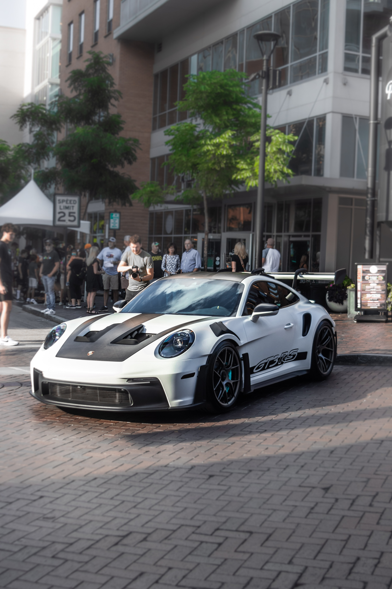

Car 1: Porsche 911 GT3 RS
Out of all cars produced by Porsche, This car stands out to me. The Porsche 911 GT3 RS is a high-performance sports car and track-focused model of the original 911. This car is acclaimed for its exceptional handling, aerodynamics, and track capabilities. The GT3 RS has a naturally aspirated flat six-engine, which offers impressive power output. Additionally, the GT3 RS, with its impressive performance, travels from 0-60 mph in just 3 seconds, with a top speed of 184 mph and a 518 horsepower. This car is my first among the top 3 because it has a very outstanding performance, not too fast and not too slow, and an iconic design, among all other variations of the original Porsche 911.
